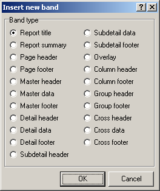
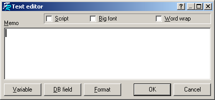
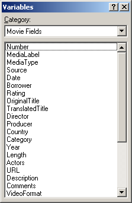
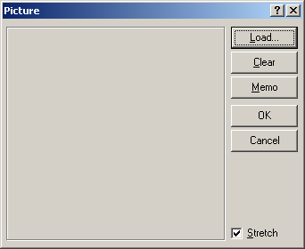

Tworzenie raportów (wzorców do drukowania)
UWAGA: PROJEKTANT RAPORTÓW JEST PO ANGIELSKU, POZOSTAWIAM ORYGINALNE NAZWY ABY U£ATWIÆ PRACÊ (t³.)
¯eby uruchomiæ "Projektanta raportów" kliknij na przycisku "Projektant..." w oknie drukowania. Mo¿esz tak¿e u¿yæ skrótu, który zosta³ dodany do menu Start lub uruchomiæ AMCReport.exe, który znajduje siê w tym samym folderze co Ant Movie Catalog.
"Projektant raportów" jest w³a¶ciwie edytorem FreeReport i nie uleg³ praktycznie ¿adnej modyfikacji (jest raczej z³o¿ony, wiêc prawdopodobnie zostawiê go w tej postaci w jakiej jest).
Ta strona poka¿e ró¿ne sposoby tworzenia raportu.
Wybór rozmiaru papieru.
File -> Page Options - wybór rozmiaru papieru. Zazwyczaj bêdzie to A4 (lub Letter). Je¶li chcesz, to mo¿esz tak¿e wybraæ orientacjê poziom± (Landscape) zamiast pionowej (Portrait).
Ramki
¯eby pola zosta³y rozpoznane musz± byæ umieszczone w "Ramkach". Aby umie¶ciæ ramkê na stronie, kliknij na ikonie Insert band , a nastêpnie na stronie, gdzie chcesz umie¶ciæ t± ramkê. Nastêpnie mo¿esz wybraæ jaki typ ramki chcesz umie¶ciæ:

Wiêkszo¶æ typów nie ma zastosowania. Te, które mo¿esz u¿yæ s± nastêpuj±ce:
Wybierz "Master data" i kliknij "OK". Kolejne okno poprosi o wybranie ¼ród³a, zostaw domy¶lne ("None") i kliknij "OK".
Obiekty tekstowe
Aby umie¶ciæ obiekt tekstowy na ramce "Master data", wybierz ikonê Insert rectangle object i umie¶æ na ramce (uwaga: je¶li umie¶cisz poza ni±, nie pojawi siê ono w koñcowym raporcie).
Wy¶wietli siê edytor tekstu:

Mo¿esz tu wpisaæ jakikolwiek tekst i klikn±æ "OK". Aby wywo³aæ to okno ponownie, po prostu dwukrotnie kliknij na obiekcie.
W menu kontekstowym (prawy klik) tego pola tekstowego s± trzy opcje:
Zmienne (pola filmów i inne)
¯eby umie¶ciæ pole filmu, dodaj obiekt tekstowy, we w³a¶ciwo¶ciach ustaw nazwê pola pomiêdzy [ ]. Lista nazw pól jest dostêpna za pomoc± przycisku "Variable" jako "Movie fields" w oknie Edytora tekstu :

Nazwy pól mog± byæ równie¿ wydrukowane przy u¿yciu zmiennych. Aby tego dokonaæ musisz dopisaæ prefiks "label:" przed nazw± pola, ca³a nazwa i prefiks powinny byæ w nawiasie kwadratowym (np. [label:Director]). Dostêpne jako "Field labels" w "Variable". Jest to u¿yteczne przy tworzeniu wielojêzycznych raportów (wstawione zostan± nazwy w jêzyku, jaki jest ustawiony w programie)
Je¶li zmienisz kategoriê na "Others" bêdziesz móg³ wybraæ pola specjalne takie jak: numer strony, data, itp...
Mo¿esz wprowadziæ normalny tekst i zmienne w tym samym obiekcie tekstowym.
Grafika
Aby umie¶ciæ obrazek, u¿yj ikony Insert picture . Okno obrazka wygl±da tak:

Aby wy¶wietla³o ono ok³adkê bie¿±cego filmu, kliknij na przycisk "Memo" i wpisz "[Picture]" lub wybierz z listy zmiennych ("Variable").
W menu kontekstowym okna obrazka, s± trzy opcje:
Mo¿esz tak¿e rysowaæ linie u¿ywaj±c ikony Draw line .
Skrypty
W oknie edytora tekstu oraz okna obrazka (po wej¶ciu w Memo) jest u góry opcja "Script". Po jej zaznaczeniu otworzy siê u do³u okno w którym mo¿na wprowadziæ komendy skryptu. Skrypt ten nie jest zwi±zany z tymi u¿ywanymi przez Ant Movie Catalog, poza u¿yciem tego samego jêzyka programowania - Pascala. Oto kilka przyk³adów:
Je¶li chcesz aby obrazek pojawia³ siê tylko dla filmów komediowych, umie¶æ nastêpuj±cy kod w skrypcie w czê¶ci Memo obrazka:
begin Visible := [Category] = 'Komedia'; end;Uwaga: kategoria jest uwzglêdniana tylko w ca³o¶ci i dok³adnie; w powy¿szym przyk³adzie nie zostanie uwzglêdniona np. "Komedia / Wojenny" ani "komedia".
Je¶li chcesz umie¶ciæ rok w nawiasach po tytule filmu tylko, gdy zosta³ on podany (aby unikn±æ wstawienia pustych nawiasów) wykorzystaj poni¿szy skrypt w oknie edytora tekstu:
begin
if ([Year] <> '') then
tmp1 := [OriginalTitle] + ' (' + [Year] + ')'
else
tmp1 := [OriginalTitle]
end;
Za¶ w oknie edytora umie¶æ [tmp1], aby wy¶wietliæ wynik skryptu jako now± zmienn±.
Oto lista niektórych podstawowych funkcji dostêpnych dla skryptów:
Length(<string>): Zwraca d³ugo¶æ ³añcucha.
Pos(<substring>, <string>): Zwraca pierwsz± pozycjê podci±gu w ci±gu znaków (tak samo jak funkcja Delphi).
LastPos(<substring>, <string>): Zwraca ostatni± pozycjê podci±gu w ci±gu znaków.
Copy(<string>, <from>, <count>): Zwraca czê¶æ ci±gu (tak samo jak funkcja Delphi).
StringReplace(<s>, <old>, <new>): zastêpuje stary ci±g nowym w ci±gu s (wielkie litery).
StringReplaceIgnoreCase(<s>, <old>, <new>): Taka sama jak StringReplace, ale bez wielkich liter.
RegExprSetSubstitute(<ExprStr>, <InputStr>, <TemplateStr>): Zwraca ci±g TemplateStr z warto¶ciami '$&' lub '$0' zastêpuje wszystkie wystêpuj±ce i zamienia wystêpuj±ce '$n' na podwyra¿enie #n.
RegExprSetReplace(<ExprStr>, <InputStr>, <ReplaceStr>): Zwraca ci±g wyst±pienia InputStr i zamienia na ci±g ReplaceStr (z wykorzystaniem podstawiania).
RegExprSetReplaceSimple(<ExprStr>, <InputStr>, <ReplaceStr>): Zwraca ci±g wyst±pienia InputStr i zamienia na ci±g ReplaceStr (bez wykorzystywania podstawiania).
UpperCase(<string>): Zmienia wszystkie litery ci±gu na wielkie litery.
LowerCase(<string>): Zmienia wszystkie litery ci±gu na ma³e litery.
NameCase(<string>): Zmienia wszystkie litery ci±gu na ma³e, z wyj±tkiem pierwszej litery.
Str(<value>): Konwertuje liczbê na ci±g znaków.
FormatFloat(<formatstr>, <value>): Konwertuje warto¶æ numeryczn± na ci±g z wykorzystaniem maski w formatstr (taki sam format jak w Delphi).
FormatDateTime(<formatstr>, <value>): Konwertuje datê/czas na ci±g znaków z wykorzystaniem maski w formatstr (taki sam format jak w Delphi).
StrToDate(<string>): Konwertuje ci±g znaków na datê.
StrToTime(<string>): Konwertuje ci±g znaków na czas.
Int(<value>): Zwraca liczbê ca³kowit±.
Frac(<value>): Zwraca u³amek liczby.
Round(<value>): Zwraca zaokr±glon± warto¶æ liczby.
value1 Mod value2: Zwraca resztê z dzielenia value1 / value2.
DATE: Zwraca aktualn± datê.
TIME: Zwraca aktualny czas.
PAGE#: Zwraca aktualny numer strony.
TOTALPAGES: Zwraca ca³kowit± liczbê stron w utworzonym raporcie. Aby korzystaæ z tej opcji, raport musi mieæ aktywowan± funkcjê "Two pass report".
Wiele funkcji Projektanta Raportów nie jest wykorzystanych, jak np. pola DB, podgl±d wydruku, podraporty...
Obecnie jedyn± metod± podgl±du wydruku jest zapisanie wzorca i u¿ycie "Od¶wie¿" w oknie Ant Movie Catalog, oczywi¶cie po wskazaniu zapisanego wzorca z listy.
W przypadku problemów z polami filmu, upewnij siê, ¿e s± one umieszczone na ramce "Master data". Je¶li niektóre pola nie dzia³aj± (np. "Total pages"), sprawd¼ czy zaznaczone jest "Two pass report" w File -> Report Options.